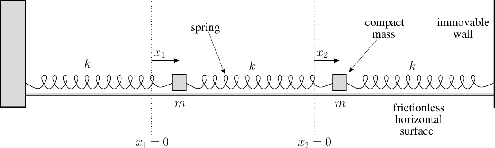

Algebraic and Semi-Algebraic Reasoning For Formal Methods
Lecture 1 - Motivation and Introduction
What are Algebraic and Semi-Algebraic Methods?
- Algebraic: Reason about polynomials and their properties.
\[ (\forall x, y \in \mathbb{R}) \quad x^2 + y^2 = 1 \ \land\ x = 1 \ \Rightarrow\ y = 0 \]
- Semi-Algebraic: Reason about polynomial inequalities. \[ (\forall x, y \in \mathbb{R}) \quad x^2 + y^2 \leq 1 \ \Rightarrow\ y \leq 1 \]
Why do we need them?
- Reasoning about programs and cyber-physical systems.
- Invariants: Safety properties
- Termination: Liveness properties
- Stability Properties
- Polynomials: useful class of functions.
- Closed under addition, multiplication, and composition.
- Function approximation by polynomials.
- Reason about nonlinear systems.
Example # 1 : Program Verification
# Integer division from Manna 1974
def div(x1, x2):
(y1, y2, y3, y4) = (x1, x2, 1, 0)
while y1 >= y2: # Inv: y2 - y3 * x2 == 0, y1*y3 + y2*y4 − y3*x1 == 0
(y2, y3) = (2 * y2, 2 * y3)
while True: # Inv: y2 - y3 * x2 == 0, y1*y3 + y2*y4 − y3*x1 == 0
if y1 >= y2:
(y1, y3) = (y1 - y2, y3 + y4)
if y3 == 1:
return y4, y1 # Prove: x1 = y1 + x2 * y4
(y2, y3) = (y2 / 2, y3 / 2) # y2, y3 are even, before divisionGoal: Prove x1 = y1 + x2 * y4 holds upon termination.
Loop invariants
- Loop Invariant: Assertion holds for each loop iteration.
- Inductive Invariant:
- Initial Condition: First time we reach loop head.
- Inductive: If it holds for one iteration, it holds for next iteration.
- Algebraic Invariants: \(p(\vec{x}) = 0\) where \(p\) is a polynomial.
- Example: \(y_2 - y_3 x_2 = 0\ \land \ y_1 y_3 + y_2 y_4 − y_3 x_1 = 0\).
Proving a Loop Invariant
while True: # Invariants: y2 - y3 * x2 == 0, y1*y3 + y2*y4 − y3*x1 == 0
if y1 >= y2:
(y1, y3) = (y1 - y2, y3 + y4)
if y3 == 1:
return y4, y1 # Prove: x1 = y1 + x2 * y4
(y2, y3) = (y2 / 2, y3 / 2) # y2, y3 are even numbers before division\[ \begin{array}{|c| c|} \hline \text{Loop Semantics (Transition Relation)} & \text{Inductive Invariant} \\ \hline \begin{array}{l} \text{Initial:}\ \Theta[x_1, \ldots, y_4] \\ \text{Loop Semantics:} \\ \; \; \;\; \rho_1(x_1, \ldots, y_4, x_1', \ldots, y_4') \ \lor\ \\ \; \;\;\; \rho_2(x_1, \ldots, y_4, x_1', \ldots, y_4') \\ \end{array} & \begin{array}{l} \text{Initial Condition }\\ \;\;\;\; \Theta[x_1, \ldots, y_4] \models p = 0 \\ \text{Inductive Conditions }\\ \;\;\;\; p = 0 \land \rho_1 \models p' = 0 \\ \;\;\;\; p = 0 \land \rho_2 \models p' = 0 \\ \end{array}\\ \hline \end{array} \]
- Proving entailments. \[ (p_1 = 0\ \land\ \cdots \land\ p_k = 0) \models p = 0 \]
Abstractions of Loops
- Remove details while preserving original system behaviors.
- Can add more behaviors.
- Algebraic Abstractions:
- Remove inequality comparisons.
- Abstract division operations (unless divisibility established).
- Treat integer variables as reals.
- Ignore floating point errors.
- …
Abstractions (Continued)
Original:
while True: # Invariants: y2 - y3*x2 == 0, y1*y3 + y2*y4 − y3*x1 == 0
if y1 >= y2:
(y1, y3) = (y1 - y2, y3 + y4)
if y3 == 1:
return y4, y1 # Prove: x1 = y1 + x2*y4
(y2, y3) = (y2 / 2, y3 / 2) # y2, y3 are even numbers before divisionAbstracted Program:
Algebraic Abstraction
Program Variables: \((x_1, \ldots, x_n) \in \mathbb{R}^n\).
Initial Condition:
\[ \Theta[\vec{x}]:\ ( p_1 = 0 \land \cdots \land p_k = 0) \,. \]Transition Relations: \[ \left\langle \ell, \rho[\vec{x}, \vec{x}'], \ell' \right\rangle \]
- \(\ell, \ell'\) are pre-/post- program locations.
- \(\rho[\vec{x}, \vec{x}']\): algebraic transition relation.
Refs. [Manna+Pnueli’95; Sank.+Sipma+Manna’ POPL 2004]
Establishing Algebraic Invariants
Algebraic Invariants: \(p_\ell(x_1, \ldots, x_n) = 0\) where \(p_\ell\) is a polynomial at location \(\ell\).
Initial: \(\Theta \models p_{\ell_0} = 0\).
Inductive: \[ (p_\ell[\vec{x}] = 0)\ \land \rho[\vec{x}, \vec{x}'] \models (p_{m}[\vec{x}'] = 0) \]
Synthesis of Algebraic Invariants
Given a program (algebraic abstraction), find algebraic invariants.
- Bounded degree invariants.
- Loops with restricted structures.
Challenge: Can we compute all algebraic loop invariants?
Algebraic Invariant Synthesis
Well-explored problem with numerous approaches.
Sank. + Sipma + Manna, POPL 2004:
- Constraint-based invariant synthesis.
Deepak Kapur and Enric Carbonell, 2004:
- Abstract Interpretation over the space of Ideals.
- Widening operators over decreasing chains of ideals.
Markus Mueller-Olm and Siedel, 2004:
- Backward relational abstract interpretation.
- Trying to make it more efficient:
- ``Pseudo-Ideals’’: Michael Colon, 2004.
- Backwards abstract interpreatation: Cachera et al, 2012.
Strongest Algebraic Invariants
Assume \(f\) is linear or polynomial.
Find the ``strongest polynomial invariant’’
- Result by Karr’1976 for linear invariants.
- Result for solvable mappings by Kapur and Carbonell’2007.
- Extended by Laura Kovacs 2008.
- Skolem Hard for polynomial \(f\) (Kovacs et al POPL’24).
Application # 2: Invariants for Physical Systems
\[\begin{array}{l|l} \begin{array}{l} \dot{x}_1 = v_1 \\ \dot{v}_1 = -k x_1 - \frac{k}{5} (x_1 - x_2)\\ \dot{x}_2 = v_2 \\ \dot{v}_2 = k (x_1 - x_2) \end{array} & \;\;\; \begin{array}{l} x_1(0) = x_2(0) = 0 \\ v_1(0) = 1, \\ v_2(0) = -1 \end{array} \end{array}\]
Prove: \[ \begin{array}{c} 576 + 1200 v_1^2 +625 v_1^4+ 2880v_1v_2+3000v_1^3 v_2+ 528v_2^2+4150v^2_1v^2 + \\ 1320 v_1v^3_2 + 121 v^4_2 −1860 k x_2^2+2750kv^2_1x_2^2 + 1600kv_1v_2x_2^2 + \\ 710 kv_2^2x_2^2+525k_2x^4_2 = 0 \end{array} \]
Cf. [Sank.+Sipma+Manna’HSCC 2004; Sank.’ HSCC 2010].
Differential Equations and First Integrals
\[\frac{d \vec{x}}{dt} = f(\vec{x}, t) \]
First integral is a quantity \(p(\vec{x})\) such that \(\frac{dp}{dt} = 0\).
- \(p(\vec{x}(t))=p(\vec{x}(0))\) for all \(t\).
Conservation laws and symmetries in physical systems.
- Conservation of energy, momentum, charge, angular momentum, …
Problem: Given ODE, compute polynomial first integrals.
- M. J. Prelle and M. F. Singer (1981), Elementary first integrals of differential equations. In Proceedings of the fourth ACM symposium on Symbolic and algebraic computation (SYMSAC ’81). Association for Computing Machinery, New York, NY, USA, 30–35.
Proving Properties of Hybrid Systems
- Cyber-Physical Systems:
- Physical dynamics controlled by a digital controller.
- Proving properties of hybrid systems involves reasoning about differential equations.
- Algebraic and semi-algebraic tools.
- Selected references:
- Ghorbal and Platzer: Characterizing Algebraic Invariants by Differential Radical Invariants, HSCC 2013,
- ``Algebraic Model Checking’’ series of papers by Bud Mishra and Venkatesh Mysore.
Probabilistic Programming

- Programs as models of probability distribution.
- Applications
- Differential Privacy.
- Fairness.
- Analysis of ML systems.
- Stochastic CPS.
Probabilistic Programs
def generate_v2(p): # p \in (0, 1)
v1 = flip(p)
v2 = flip(p)
v3 = flip(p)
if v1 == v2:
return int(v3)
else:
return 2- Programs that can generate random values.
- According to various distributions.
- Conditioning.
Reasoning about Probabilistic Loops
- Probabilistic programs as stochastic systems:
\[X_{t+1} = [\![P]\!] (X_t, W_t), \text{wherein}\ W_t \sim D\]
- Martingale theory: a probabilistic notion of a conserved quantity.
\[\mathbb{E}(M_{t+1}\ |\ X_t) = M_t \]
- \(M_t\) can be seen as a function of the system state.
- \(M_t = [\![ e ]\!](X_t)\).
- Its expected value remains invariant.
- Concentration of measure inequality on Martingales.
Cf. Aleks Chakarov and Sank.’ CAV 2013 and Sank.’ Chapter 2020.
Martingale and Super-Martingale Based Analysis
- Original work on finite valued distributions:
- McIver and Morgan, Abstraction, Refinement and Proof for Probabilistic Systems.
- Recent papers from
- Joost-Pieter Katoen and co-workers.
- Krishnendu Chatterjee, Tom Henzinger et al.
Probabilistic Reasoning
Program # 1:
def generate_v1(p): # p is a parameter in (0, 1)
v1 = flip(p) # True with prob. p and False w.p. 1-p
v2 = flip(p) # True with prob. p and False w.p. 1-p
i = int(v1) + int(v2)
return iProgram # 2 :
def generate_v2(p): # p \in (0, 1)
v1 = flip(p)
v2 = flip(p)
v3 = flip(p)
if v1 == v2:
return int(v3)
else:
return 2Observation Data: \((f_0, f_1, f_2)\) fraction of \(0, 1\) and \(2\).
Which program is being used ?
Probabilistic Reasoning (Continued)
Program # 1:
def generate_v1(p): # p is a parameter that can take on any value in (0, 1)
v1 = flip(p) # True with prob. p and False w.p. 1-p
v2 = flip(p) # True with prob. p and False w.p. 1-p
i = int(v1) + int(v2)
return i\[\begin{array}{l} q_0 = (1-p)^2,\ q_1 = 2 p(1-p),\ q_2 = p^2\,. \end{array}\]
``Eliminiate’’ \(p\):
\[ q_0 + q_1 + q_2 = 1,\ 4q_0 = (2 - q_1 - 2 q_2)^2\]
Probabilistic Reasoning (Continued)
Program # 2 :
def generate_v2(p): # p \in (0, 1)
v1 = flip(p)
v2 = flip(p)
v3 = flip(p)
if v1 == v2:
return int(v3)
else:
return 2\[ q_0 = (1-p)( (1-p)^2 + p^2), q_1 = p((1-p)^2 + p^2) , q_2 = 2p(1-p)\]
Eliminate \(p\):
\[ q_0 + q_1 + q_2 = 1,\ (1- q_2)^2 q_2 = q_0 q_1 \]
Probabilistic Reasoning
Consider two different probabilistic programs that generate the same output:
Program # 1: \[4q_0 = (2 - q_1 - 2 q_2)^2\]
Program # 2 : \[ (1- q_2)^2 q_2 = q_0 q_1 \]
Observation Data: \((f_0, f_1, f_2)\) fraction of occurrences of \(0, 1\) and \(2\).
Which program is being used ?
- Compare data against the two algebraic curves.
Reference: Lectures on Algebraic Statistics by Strumfels et al.
Algebraic Reasoning (Summary)
- Reason about polynomial equations.
- Invariant Synthesis for Program Loops.
- Conservation Laws for Differential Equations.
- Hybrid System Analysis.
- Emerging Applications:
- Variable Elimination in Scientific Models.
- Algebraic Statistics.
Semi-Algebraic Reasoning
Semi-Algebraic Methods
- Semi-Algebraic: Reason about polynomial inequalities. \[ (\forall x, y \in \mathbb{R}) \quad x^2 + y^2 \leq 1 \ \land\ x + y \leq 0 \ \Rightarrow\ y \leq 1.423 \]
Why?
\[(1.423 - y) = \left( \begin{array}{c} 0.765134 \ \ (1-x^2-y^2)\ + \\ 0.4 \ \ (-x - y)\ + \\ 0.6574 - 0.6 x + 0.4 y + 0.765134 (x^2 + y^2) \end{array} \right) \]
Application # 3: Stability Analysis
- Prove that a system’s trajectories converge to a fixed point.
- Fundamental for control synthesis.
Lyapunov Function
Find a function \(V(x)\) such that:
- Positive Definite:
\[ \forall x \in X \setminus \{ x^* \}, V(x) \geq 0 \,. \]
- Derivative Condition:
\[ \forall x \in X \setminus \{ x^* \}, \nabla V(x) \cdot f(x) < 0 \,.\]
Require semi-algebraic reasoning.
Application # 4: Program Verification
# program to compute square root of a number
def sqrt(x):
if x < 0:
raise ValueError("Cannot compute square root of negative number")
if x == 0:
return 0
guess = x / 2.0
while True:
new_guess = (guess + x / guess) / 2.0
if abs(new_guess - guess) < 1e-10: # Convergence condition
return new_guess
guess = new_guess
# polynomial inequality invariant: ?
# termination: ? Other Applications
Programs: Probabilistic reasoning.
AI Systems: Reasoning about neural networks.
Cyber-Physical Systems: Reachability and Safety Shielding.
Robotics: Motion planning, Inverse kinematics, etc.
Structure of the Course
- Algebraic Reasoning - Polynomial Equations.
- Grobner Bases.
- Elimination Theory.
- Applications.
- Semi-Algebraic Reasoning - Polynomial Inequalities.
- Positivstellensatz.
- Sum-Of-Squares.
- Semi-Definite Optimization.
- Applications.
Polynomials : Preliminary Notions
Polynomials
\(p(x) = a_n x^n + a_{n-1} x^{n-1} + \cdots + a_1 x +a_0\).
Coefficient Ring: \(R\).
- \(a_0, \ldots, a_n \in R\).
- Examples: Complex \(\mathbb{C}\), Reals \(\mathbb{R}\), Integers \(\mathbb{Z}\).
Polynomial Ring: \(R[x]\).
Degree: \(\deg(p) = n\) if \(a_n \neq 0\).
Multivariate Polynomials
\[ p(x_1, \ldots, x_n) = \sum_{\alpha \in \mathbb{N}^n} a_{\alpha} \underset{\text{monomial}}{\underbrace{\vec{x}^{\ \alpha}}} \]
Multivariate Polynomial Ring: \(p(x_1, \ldots, x_n) \in R[x_1, \ldots, x_n]\).
Degree of Multivariate Polynomial: \[ \deg(p) = \max_{\{ \alpha\ |\ a_{\alpha} \not= 0 \}} \sum_{i=1}^n \alpha_i \]
Problems
Entailment: \[p_1(\vec{x} ) = 0\ \land\ \cdots\ \land\ p_m(\vec{x}) = 0\ \models\ p(\vec{x}) = 0\]
Elimination: \[(\exists\ \vec{y}) p_1(\vec{x}, \vec{y}) = 0\ \land\ \cdots \land\ p_m(\vec{x}, \vec{y}) = 0\]
Finding a model: \[p_1(\vec{x} ) = 0\ \land\ \cdots\ \land\ p_m(\vec{x}) = 0\]
Reasoning with Equalities
“Lagrangian” Reasoning
Proving properties about equations:
\[ \begin{array}{c} p = \lambda_1 p_1 + \cdots + \lambda_k p_k\\ \hline \left( p_1 = 0\ \land\ \ldots\ \land\ p_k = 0 \right) \models p = 0 \\ \end{array} \]
\(\lambda_1, \ldots, \lambda_k\) are called multipliers.
- Constants, or functions over \(\vec{x}\).
Linear Equations
\[ \begin{array}{c} A_{11} x_1 + A_{12} x_2 + \cdots + A_{1n} x_n = 0 \\ \ddots \\ A_{m1} x_1 + A_{m2} x_2 + \cdots + A_{mn} x_n = 0\\[5pt] \hline a_1 x_1 + a_2 x_2 + \cdots + a_n x_n = 0 \end{array} \]
“Lagrangian” Reasoning (Example)
\[ \begin{array}{rl} \; 2 x - 3 y + 4 z & = 0 \ \land\ \\ x - 2 y + 2 z & = 0 \\ \hline \Rightarrow y & = 0 \end{array} \]
Here is the “proof”:
\[ 1 \times ( 2 x - 3 y + 4 z ) - 2 \times ( x - 2 y + 2 z ) = y \]
“Lagrangian” Reasoning (Continued)
\[ \mathbf{(A)}: \ \forall \vec{x} \in \mathbb{R}^n,\; A \vec{x} = 0 \models \vec{a} \cdot \vec{x} = 0\ ? \]
\[ \mathbf{(B)}:\ (\exists\ \vec{\lambda} \in \mathbb{R}^m)\; A^t \vec{\lambda} = \vec{a}\ ?\]
Theorem: (A) if and only if (B) holds.
Proof: ??
“Lagrangian” Reasoning (Continued)
\[ \mathbf{(A)}: \ \forall \vec{x} \in \mathbb{R}^n,\; A \vec{x} = 0 \models \vec{a} \cdot \vec{x} = 0\ ? \]
\[ \mathbf{(B)}:\ (\exists\ \vec{\lambda} \in \mathbb{R}^m)\; A^t \vec{\lambda} = \vec{a}\ ?\]
Theorem: (A) if and only if (B) holds.
Proof Sketch: \(\Rightarrow\) Consider the rank of the matrix \(\widehat{A} = \left[ \begin{array}{c} A\\ \vec{a}^t \\ \end{array} \right]\). (A) holds if and only if \(\mathsf{kernel}(A) = \mathsf{kernel}(\widehat{A})\). Therefore, \(\mathsf{rank}(\widehat{A}) = \mathsf{rank}(A)\). Thus, \(\vec{a}\) can be expressed as a linear combination of the rows of \(A\).
\(\Leftarrow\) Suppose (B) holds: \(A^t \vec{\lambda} = \vec{a}\). Let \(\vec{x}\) be such that \(A \vec{x} = 0\). It holds that \(\vec{\lambda}^t A \vec{x} = 0\). Therefore, \(\vec{a}^t \vec{x} = 0\), or \(\vec{a} \cdot \vec{x} = 0\).
Reasoning with Polynomials
- Prove:
\[ (\forall x, y \in \mathbb{R}^2)\ x^2 + y^2 = 1 \land x + y = 0 \Rightarrow y^2 = \frac{1}{2} \]
Can we use multipliers?
\[ y^2 - \frac{1}{2} = (x^2 + y^2 -1 ) \times \lambda_1 + (x + y) \times \lambda_2 ?\]
Reasoning with Polynomials
- Prove: \((\forall x, y \in \mathbb{R}^2)\ x^2 + y^2 = 1 \land x + y = 0 \Rightarrow y^2 = \frac{1}{2}\)
\[ y^2 - \frac{1}{2} = (x^2 + y^2 -1 ) \times \lambda_1 + (x + y) \times \lambda_2 ?\]
- Solution: Extend Lagrange multipliers to polynomials.
\[ y^2 - \frac{1}{2} = (x^2 + y^2 - 1) \times \underset{\lambda_1(x,y)}{\underbrace{\frac{1}{2}}} + (x + y) \times \underset{\lambda_2(x,y)}{\underbrace{\frac{(y -x )}{2}}}\,. \]
Lagrangian Reasoning (Questions)
- Clearly sound:
\[\begin{array}{c} p = \sum_{i=1}^m \lambda_i p_i\\ \Rightarrow\\ (p_1 = 0\ \land\ p_2 = 0\ \land\ \cdots\ \land\ p_m = 0)\ \models\ p= 0 \end{array}\]
- Is the converse true?
- Hilbert’s Nullstellensatz.
- Machinery to check: Groebner Bases.
Lagrangian Reasoning for Inequalities
\[ \begin{array}{rcll} 2 x - 3 y + 4 z & \leq & 5 & \leftarrow e_1 \\ 3 x - 2 y + 0 z & \leq & 7 & \leftarrow e_2\\ z & \leq & 3 & \leftarrow e_3 \\ \hline & & (\Rightarrow) \\ x - y + z & \leq & 3 \\ \end{array}\]
\[( x - y + z - 3) = \frac{1}{5} ( e_1 + e_2 + e_3 )\]
Lagrangian Reasoning (Continued)
\[ \begin{array}{c} e \leq 0,\ \lambda \geq 0\\ \hline \lambda \times e \leq 0 \\ \end{array}\]
\[ \begin{array}{c} e_1 \leq 0,\ e_2 \leq 0\\ \hline e_1 + e_2 \leq 0 \\ \end{array}\]
\[ \begin{array}{c} \\ \hline -1 \leq 0 \\ \end{array}\]
Conic Combination
Consider linear inequalities \[e_1 \leq 0, \ldots, e_m \leq 0\]
Conic combination:
\[ -\lambda_0 + \lambda_1 e_1 + \cdots + \lambda_m e_m \leq 0\]
wherein \(\lambda_i \geq 0\).
Farkas’ Lemma
\[\varphi:\ e_1 \leq 0\ \land\ e_2 \leq 0\ \cdots\ \land\ e_m \leq 0\]
- \(\varphi\) is unsatisfiable iff \(1 \leq 0\) lies in conic combination.
- If \(\varphi\) is satisfiable: \(\varphi \models e \leq 0\) iff we can derive \(e \leq 0\) as a conic combination.
- Foundations of linear programming and duality theory.
- Reference: V. Chvatal’s amazing book on Linear Programming.
Farkas’ Lemma in Formal Methods
- Vast literature on using Farkas’ Lemma for
- Invariant Synthesis: Colon + Sank. + Sipma’ CAV 2003; Gulwani et al., Tiwari et al.,…
- Ranking Function Synthesis: Colon + Sipma, Podelski + Rybalchenko, Bradley + Manna, Cook + Rybalchenko + Podelski, …
- Cost analysis of programs
- Analysis of probabilistic programs
- Proof production in linear arithmetic SMT solver: [Reynolds+Tinelli]
Beyond Farkas Lemma
Proving entailment with polynomials:
\[p_1 \leq 0, \cdots, p_m \leq 0\ \models\ p \leq 0 \]
Positivstellensatz:
\[ p = -\sigma_0 + \sigma_1 p_1 + \cdots + \sigma_m p_m \] where \(\sigma_i\) are positive polynomials.
Next Time
Groebner Bases
- The ``swiss army knife’’ of computational algebraic geometry.